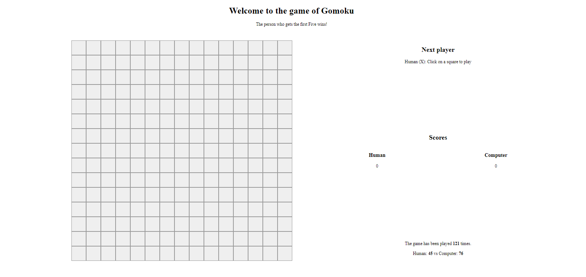

Dans cette application de restaurant en ligne, les clients pourraient choisir des plats dans le menu. Après l'identification, ils pourraient envoyer et suivre leurs commandes. Le propriétaire (id: admin, pass: admin123) pourraient recevoir, préparer et informer l'état des commandes. L'application est implémentée en utilisant React, React-Bootstrap, Node.js, Express et MongoDB.